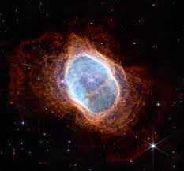
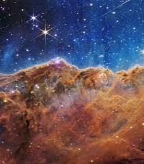
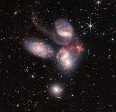
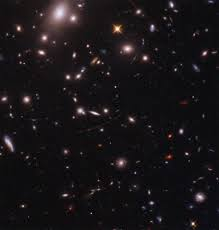
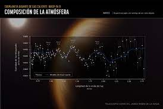

Esta es unas de las fotos que tomo el telescopio james webb de una estrella apagandose

Es donde nacen las estrellas

En esta estatua se representa la creación del Universo al principio de cada ciclo cósmico representado a su vez por la danza cósmica

se encuentran en galaxias formando extensas nubes moleculares en el medio interestelar

Midio un planeta y en encontro vapor de agua